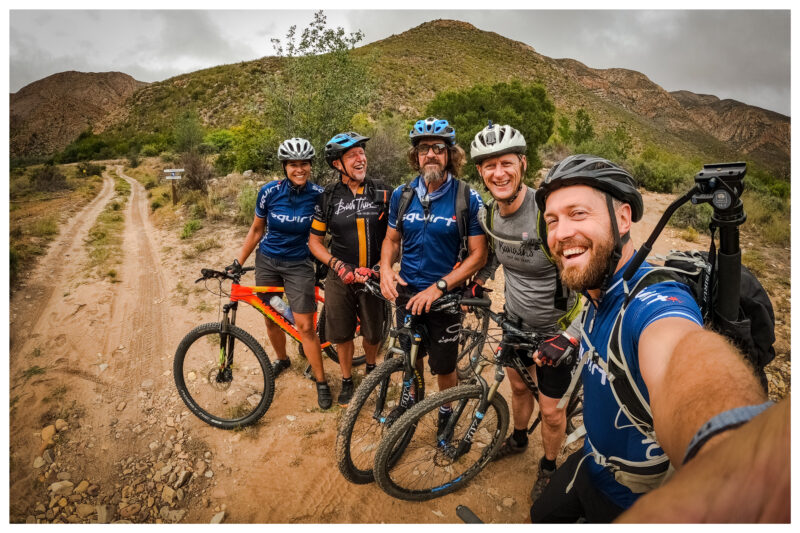
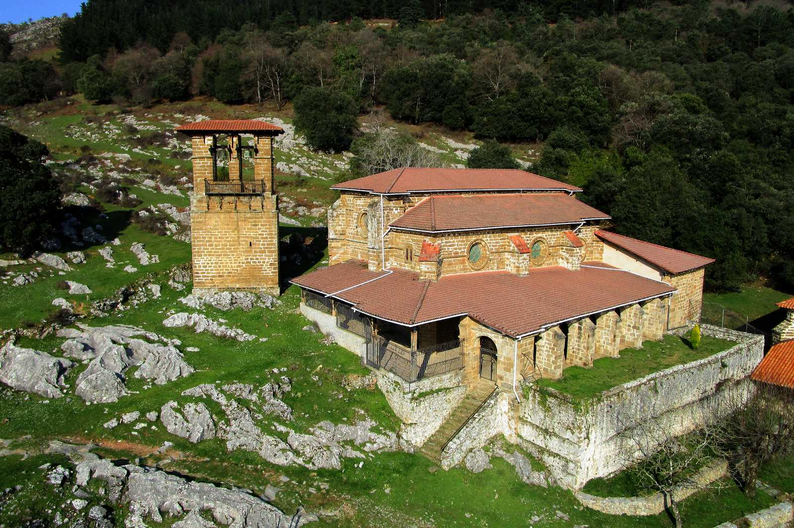
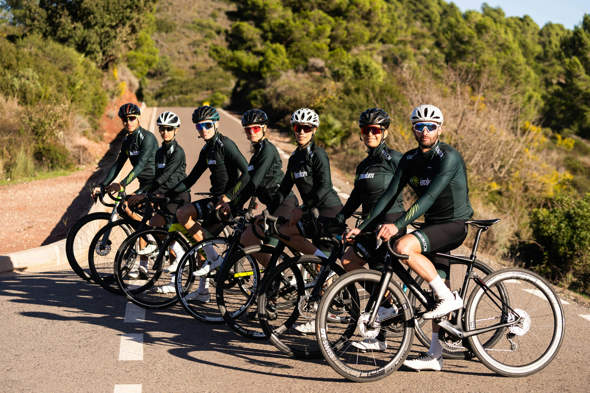
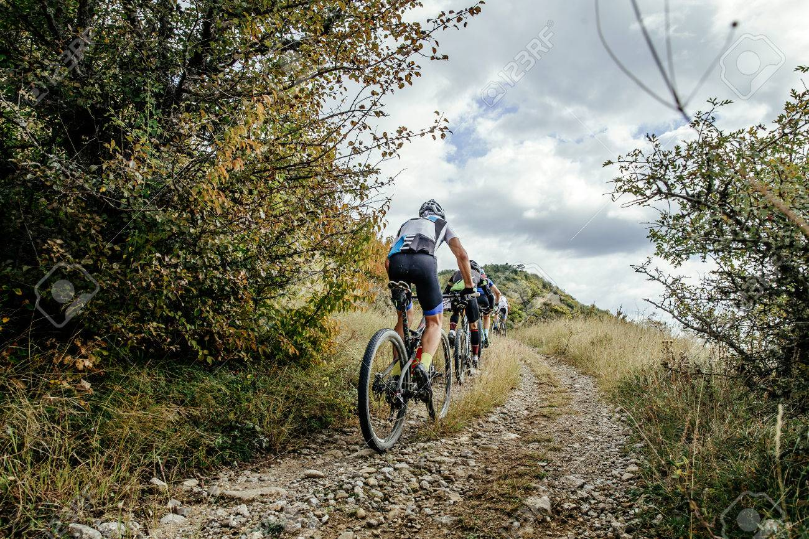

- 
- 
- 
- 
¿Quiénes somos?
En Ciclo Laudio compartimos una misma pasión: el ciclismo en todas sus formas. Somos un club de ciclismo con sede en Llodio (Álava), nacido del entusiasmo de un grupo de amigos que decidió convertir su afición en una comunidad abierta, activa y formativa para todos los niveles y edades.
Nuestro objetivo es promover el ciclismo como estilo de vida, fomentando el compañerismo, la salud y el respeto por la naturaleza. En Ciclo Laudio creemos que cada pedalada cuenta, ya sea entrenando en casa, aprendiendo las bases del ciclismo, o explorando las carreteras y montañas del País Vasco.

Durante la semana ofrecemos cursos y entrenamientos adaptados a diferentes edades y niveles, tanto en interior como en exterior. Los fines de semana, cambiamos el aula por la aventura con rutas organizadas por los paisajes más espectaculares de Euskadi: desde carreteras costeras hasta puertos de montaña llenos de historia ciclista.
Más que un club, somos una familia de ciclistas que disfruta del deporte, del entorno y del buen ambiente que se genera en cada salida. Si te apasiona el ciclismo o quieres empezar a descubrirlo, en Ciclo Laudio encontrarás tu lugar para aprender, mejorar y disfrutar sobre dos ruedas.
contáctanos